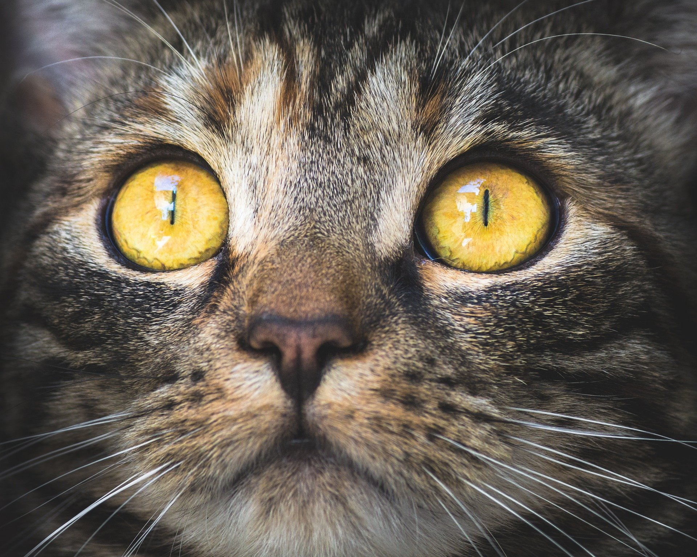

Cat
The cat (Felis catus) is a domestic species of small carnivorous mammal. It is the only domesticated species in the family Felidae and is often referred to as the domestic cat to distinguish it from the wild members of the family.
A cat can either be a house cat, a farm cat or a feral cat, the latter ranges freely and avoids human contact. Domestic cats are valued by humans for companionship and their hability to kill rodents.
About 60 cat breeds are recognized by various cat registries.